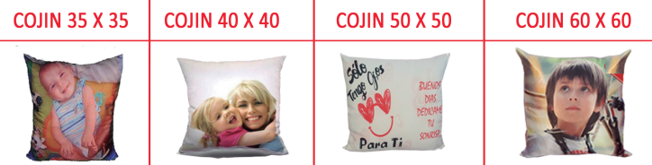
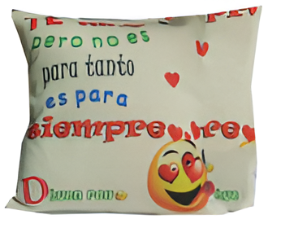
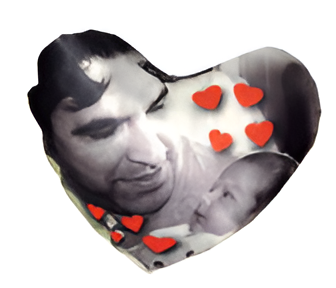
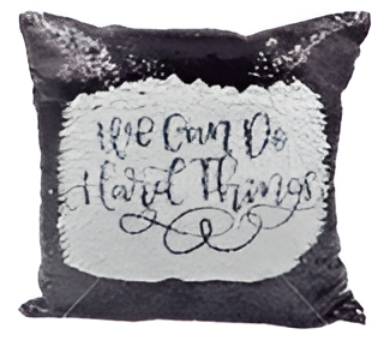

COJINES DE TELA RASO
35 X 35
40 X 40 (EL MAS VENDIDO)
50 X 50
60 X 60

COJINES DE TELA ALGODON
35 X 35
40 X 40 (EL MAS VENDIDO)

ALMOHADAS
30 X 50 (EL MAS VENDIDO)
50 X 70
2 CARAS SUPLEMENTO 5€

COJIN CORAZÓN
Cojín de color blanco apto para sublimación.
La funda tiene una cremallera para facilitar su lavado.
Posibilidad de personalizar el cojin por ambas caras.
Forma: Corazón.
Tamaño: 40 X 45 cm.

COJINES DE LINO
Forma: Cuadrado
Material: Tipo lino (95% poliéster/5% algodón)
Impresión: 1 o 2 caras
Relleno no incluido
Apto para lavadora
Gramaje: 400 gr/m2
35 X 35
40 X 40 (EL MAS VENDIDO)

COJINES LENTEJUELAS
Forma: Cuadrado
Colores: Varios
AZUL, ROJO, NEGRO Y DORADO
Material: Microfibra y poliéster
Impresión: 1 cara (las lentejuelas por un lado)
Medidas 40 X 40
2 CARAS SUPLEMENTO 5€
